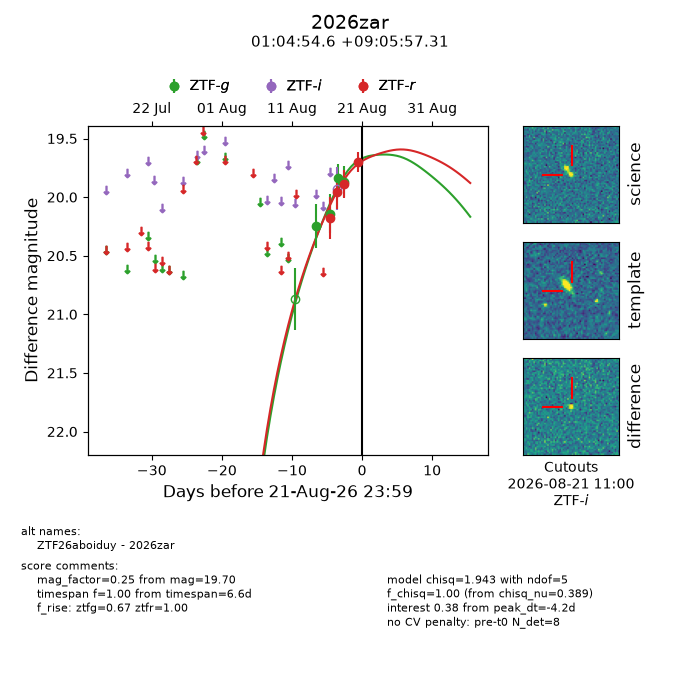
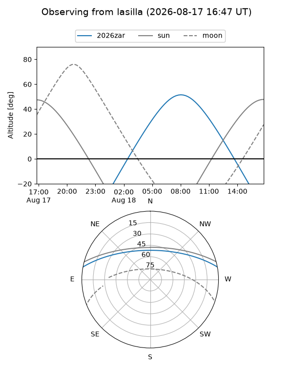
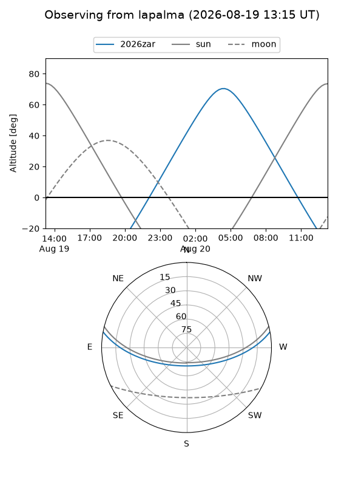
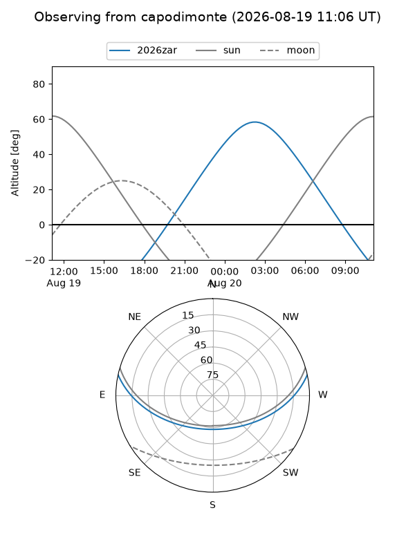
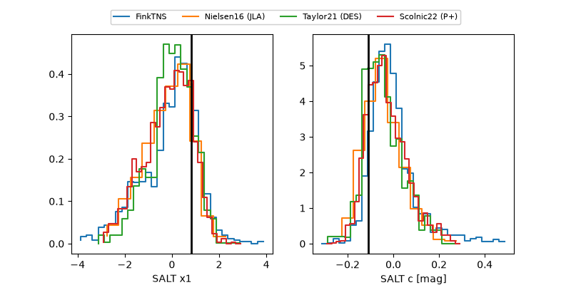

2026zar
Target 2026zar at 2026-08-22 00:01
Aliases and brokers:
FINK-ZTF: ztf.fink-portal.org/ZTF26aboiduy
Lasair-ZTF: lasair-ztf.lsst.ac.uk/objects/ZTF26aboiduy
ALeRCE-ZTF: alerce.online/object/ZTF26aboiduy
YSE-PZ: ziggy.ucolick.org/yse/transient_detail/2026zar
TNS name: wis-tns.org/object/2026zar
Direct TNS query: direct search
alt names
ZTF26aboiduy (ztf,fink_ztf)
2026zar (tns,yse)
Coordinates:
equatorial (ra, dec) = 16.2275,+9.09925
equatorial (HMS+DMS) = 01:04:54.60,+09:05:57.31
galactic (l, b) = (128.5453,-53.62560)
Flags:
TNS type: nan
peak dt: -4.2
Photometry:
last ztfg=19.87, ztfr=19.70
4 ztfg, 4 ztfr detections
Lightcurve

Visibility



Additional plots
